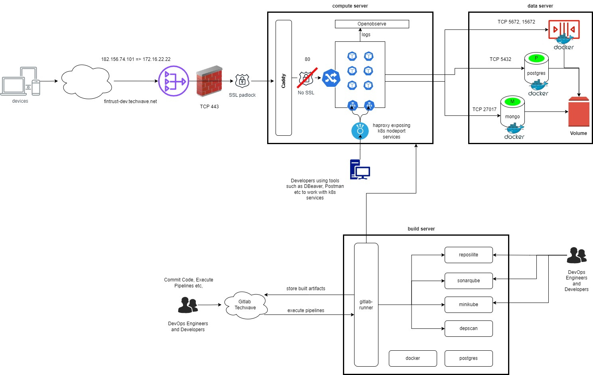

Overview#
This page presents an overview of our development environment.
Infrastructure#
Following on-premise infrastructure is available in DEV environment
Build Server#
The build server is responsible for executing CI/CD pipelines and also housing development tools such as Reposilite, SonarQube etc.
| Aspect | Remarks |
|---|---|
| hostname | TWDSDL-0973 |
| OS | Ubuntu 22.04.2 LTS |
| IPAddress | 172.16.8.234 |
| CPU | 12 CPU |
| RAM | 32 GB |
Compute Server#
The compute server hosts all our application components
| Aspect | Remarks |
|---|---|
| hostname | TWDSDL-1002 |
| OS | Ubuntu 20.04.2 LTS |
| IPAddress | 172.16.22.22 |
| CPU | 12 CPU |
| RAM | 32 GB |
Data Server#
The data server hosts all our data
| Aspect | Remarks |
|---|---|
| hostname | twinh-des-0977 |
| OS | Ubuntu 20.04.6 LTS |
| IPAddress | 172.16.22.16 |
| CPU | 12 CPU |
| RAM | 16 GB |
Topology#
This section describes the topology of the Compute,Data and Build Servers.

We are storing the source code, configuration files, deployment manifests along with helm chart in techwave hosted gitlab (https://gitlabnew.techwave.net)
Developers/Devops engineers commits the code/configuration into the gitlab source code repositories.
After code commit, the pipelines triggers the series of actions describe in .gitlab-ci.yml which is stoed in every module repository.
Gitlab-runner (Agent for Gitlab) which is running in the build server take care of CI/CD pipelines.
Below is the entire topology (inlcudes CI/CD, testing, deployment, and logging) of the development environment.
-
Code fetch from respective repository to the gitlab-runner workspace.
-
Builds the code using the maven and pushes the executable (.jar file) into the reposilite which is hosted on the same server.
-
Code analysis and reports generation using SonarQube which is runing on the same server on port 9000.
-
Developers can check the generate reports from SonarQube for further analysis.
-
Next, depscan (hosted in docker container) scans the code for the vulnerabilities and generates a detailed report about the severity of vulnerabilities and actions need to be performed to mitigate.
-
Developers/Devops can download the depscan report from Gitlab CI/CD pipleine artifacts.
-
Docker images are built using the Dockerfile stored in the respective repository.
-
Then docker image is pushed into the Gitlab Container Registry
-
To perform the automation testing, an automation environment is provisioned on-demand, and after the tessting, it will be destroyed.
-
Testers/Devops can view the summary of automation testcases report via CI/CD pipeline artifacts
-
A deployment repository (af-devops) takes care of automation testing, deployments in development & staging environment respectively. The pipeline will take care of the following things.
-
Packages the application helm charts and pushes to Gitlab package registry.
-
Installs the automation environment in minikube using the application helm charts.
-
Runs the testcases on automation environment, and generates the summary of testcases.
-
Destroys the automation environment, after automation testing.
-
Deploys application in compute server (development environment) on minikube.
-
Runs smoke tests in compute server (development environment).
-
Deploys the application in staging environment in EKS cluster which is in AWS cloud.
-
-
Databases like Postgres, Mongo and message broker RabbitMQ are hosted in Data server as docker containers.
-
Application running on the compute server (development environment) connects to the databases, message broker running on data server. Docker volumes are on the same dataserver for these data & message broker containers.
-
Application is divided into parts:
1.Allfunds
2.Accounting
-
Nginx-ingress-controller is in place to route the traffic to application ( Allfunds )
-
When request comes from the internet to the application url "https://fintrust-dev.techwave.net", it resolves to 182.156.74.101 which is the public IP of NAT Gateway.
-
NAT GW then nats the address to 172.16.22.22 which is IP address of the compute server.
-
SSL termination happens at Caddy which have built in feature called letsencrypt, which takes care of certificates and their auto renewal.
-
From caddy, it goes to ingress which has path based routing to the modules running on minikube.
-
Accounting modules aren't exposed outside, allfunds modules communicates with accounting modules using the k8s service names whenever necessary.
-
Accounting modules are exposed via Kubernetes Nodeport service.
-
HAPROXY routes are configured on these nodeports of accounting modules in haproxy configuration file.
-
Developers/QA are using these tunnels to access/test the accounting APIs whenever necessary.
-
For application logging, Openobserve tool is configured on compute server.
-
Light-weight logging agent, fluent-bit collects the logs from application pods and redirects those to openobserve which we can view in UI.